一笔画游戏是孩子比较喜欢玩的一个游戏。如果用笔在纸上能够连续不断、不重复地画出某个图形，那么这个图形就是一笔画成的。一笔画里实际上融入了最优化的思想，不走重复的路线，但是每条路线又都要走到。例如参观博物馆、参观动物园时，走这样的路线可以最大限度地节省时间，看到更多的东西。
对于一笔画问题，建议让孩子实际动手画一画，然后再总结规律，这样既能锻炼孩子的动手能力，又能增加孩子对图形的认知，增强孩子归纳和总结的能力。
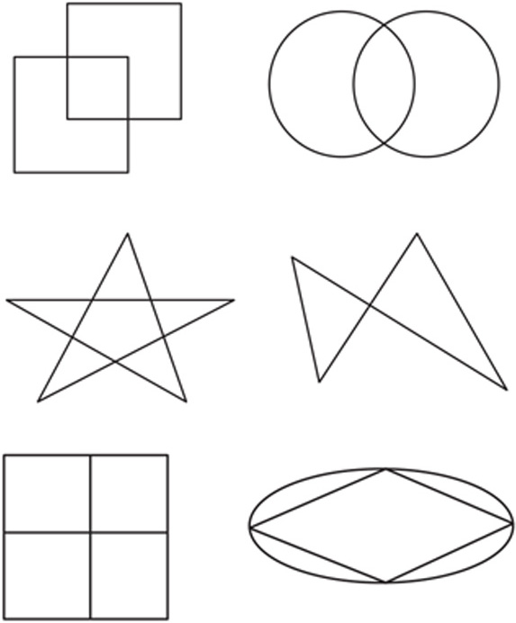
典型例题 1 你看看下面的哪几个图形能够一笔画成，并动手画一画。
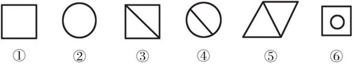
能够一笔画成的图形，线一定都是相连的，所以图⑥是不可以一笔画成的。图①～⑤，可以分别通过下图的步骤一笔画成。
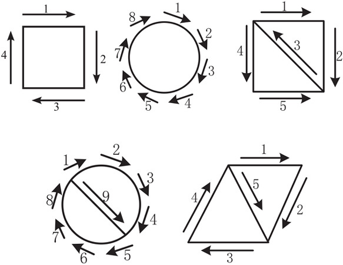
典型例题 2 动物园修了一个水族馆，为了让游客能够参观到每个馆，并且不走重复的路线，你觉得让游客走什么样的参观路线最好，水族馆的入口和出口开在哪儿最好？
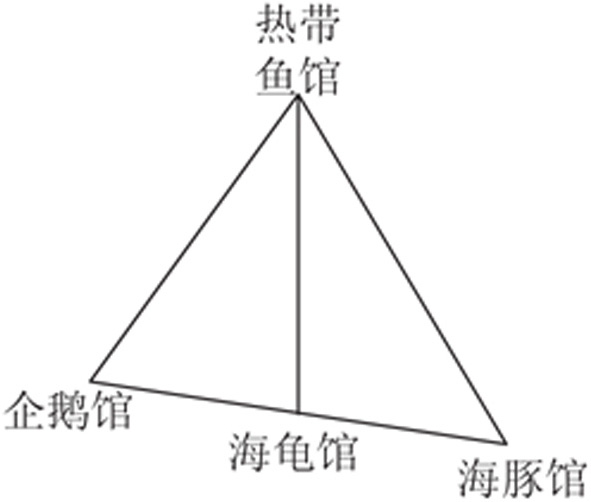
我们从4个不同的馆开始画，试试看能不能一笔画完。从企鹅馆、海豚馆开始画，找不出一笔画的路径。如果从海龟馆开始画，一笔画的路径如下（仅给出两种方案）。
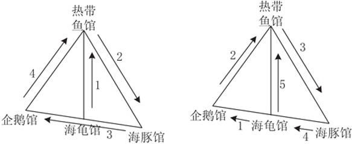
如果从热带鱼馆开始画，一笔画的路径如下（仅给出两种方案）。
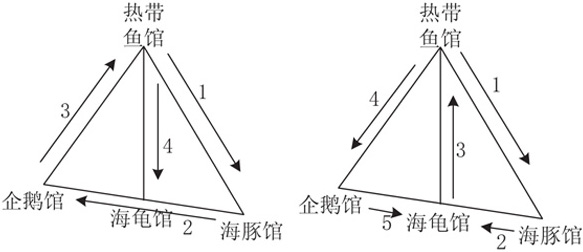
从图中可以看出：如果入口开在海龟馆，则出口开在热带鱼馆；如果入口开在热带鱼馆，则出口开在海龟馆。
对于一笔画问题，一个图形是否能够一笔画成，有以下的规律。
1.只有偶点的图形可以一笔画成，从任何一点开始画都可以。
2.只有2个奇点的图形可以一笔画成，只能从一个奇点开始，到另一个奇点结束。
3.奇点超过2个的图形不能一笔画成。
所谓偶点是指经过该点的直线的数量是偶数，所谓奇点是指经过该点的直线的数量是奇数。
用以上的规律，孩子可以试着去解决一些图形的一笔画问题，为以后使用其他的定律、定理解题打下一个良好的基础。
1.下面的哪些图形能够一笔画成？
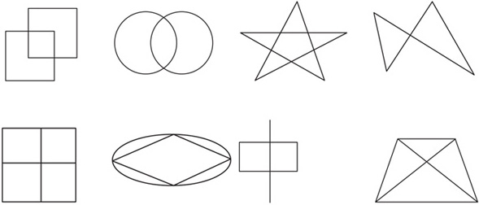
2.郊区新修了一个动物园，为了让游客能够参观到每个馆，并且不走重复的路线，你觉得让游客走什么样的参观路线最好，动物馆的入口和出口开在哪儿最好？
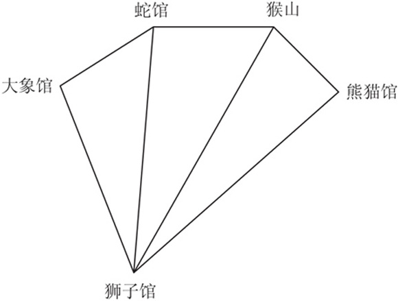
第1讲 单数双数
1.这筐橘子原来的个数是单数。
2.根据规律，单数号灯笼上的数字是6，双数号灯笼上的数字是8，19是单数号，所以第19个灯笼上的数字是6。
3.因为拉双数下开关，灯就会处于熄灭的状态，拉单数下开关，灯会处于亮的状态，所以马克拉了7下开关。
4.跑单数次时，运动员在终点，跑双数次时，运动员在起点，现在跑了21次，所以他现在在终点。
5.小鸭子游单数次会停在河的西岸，游双数次会停在河的东岸，现在小鸭子停在河的东岸，所以小鸭子游了双数次。
6.第1、第3、第5、第7、第9、第11、第13、第15个人会报1，一共有8个人，所以要准备8个篮球。
第2讲 对应关系
1.有6种动物起来锻炼身体了。
2.2只兔子正确的影子如图所示。
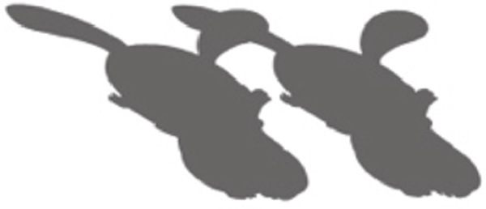
3.
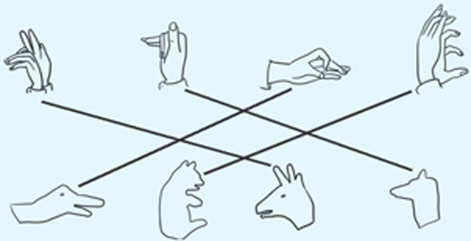
4.略。
5.略。
6.用圆圈圈起来的地方不一样。
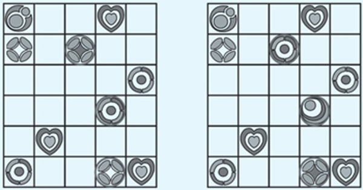
7.略。8.图中用圆圈圈起来的1辆坦克与例图相同。
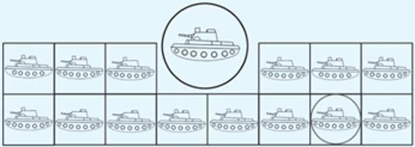
第3讲 间隔问题
1.一共要锯3次。
2.需要打5个结。
3.每锯1次需要付3元，锯5段需要锯4次，应该付12元。
4.林叔叔从1楼走到5楼，需要走4个2分钟，所以一共需要8分钟。5.莫妮卡需要4张书签。
6.长棍面包需要分成8段，需要切7次。
7.如果在每2个男孩子之间插进1个女孩子，一共可以插进去9个女孩子，所以队伍一共有10+9=19个人。
8.一共插进10位小朋友。
第4讲 图形计数
1.分别有5个三角形、6个三角形。2.分别有8个长方形、7个长方形。3.分别有3个正方形、5个正方形。4.分别有4个带★的三角形和6个带★的正方形。
5.其中圆形有6个，三角形有5个，长方形有16个。
6.其中圆形有5个，三角形有7个，长方形有8个。
第5讲 多角度观察
1.从上面往下看，看到的图形是（1）；从前面往后看，看到的图形是（2）；从右侧向左侧看，看到的图形是（4）。
2.积木块（7）从前面往后看，能看到1个正方形；积木块（1）（3）（5）从前面往后看，能看到2个正方形；积木块（2）、（6）、（8）从前面往后看，能看到3个正方形。
3.积木块（1）（2）（5）（6）从侧面是看正方形，积木块（2）从侧面看是1个小正方形，积木块（1）（6）从侧面看是4个小正方形，积木块（5）从侧面看是9个小正方形。
4.是F小朋友看到的，是B小朋友看到的，是A小朋友看到的，是C小朋友看到的，是E小朋友看到的，是D小朋友看到的。
5.
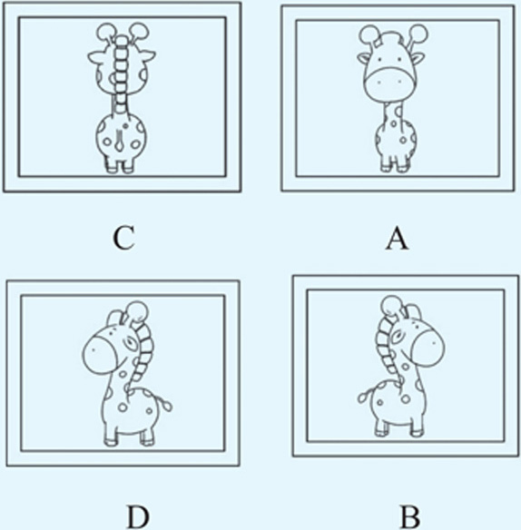
第6讲 图形分割
1.
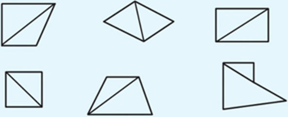
2.
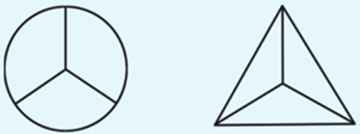
3.
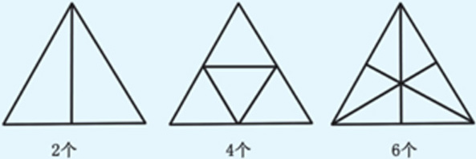
4.
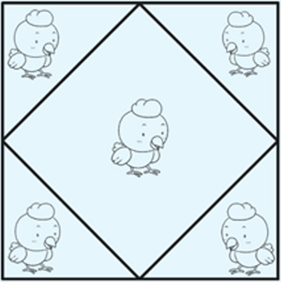
5.
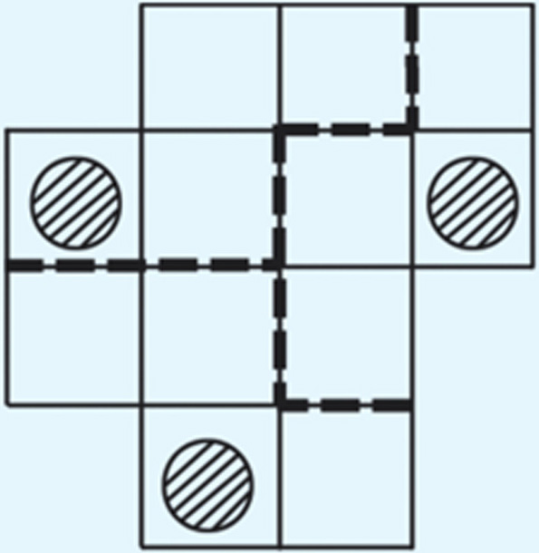
6.
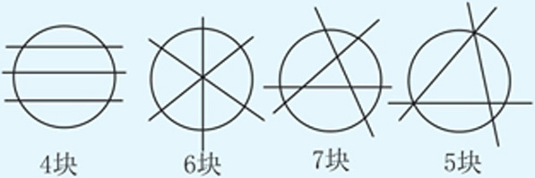
7.
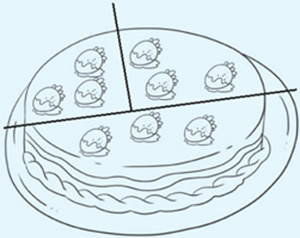
8.
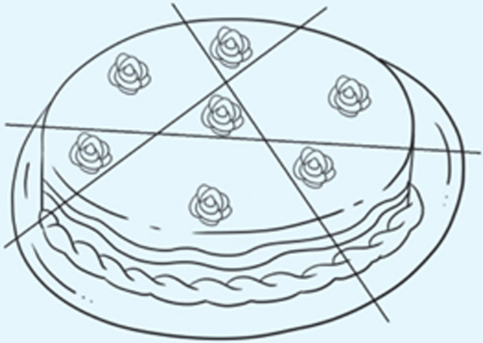
9.每个月饼都平均分成4份，每个人拿3份。
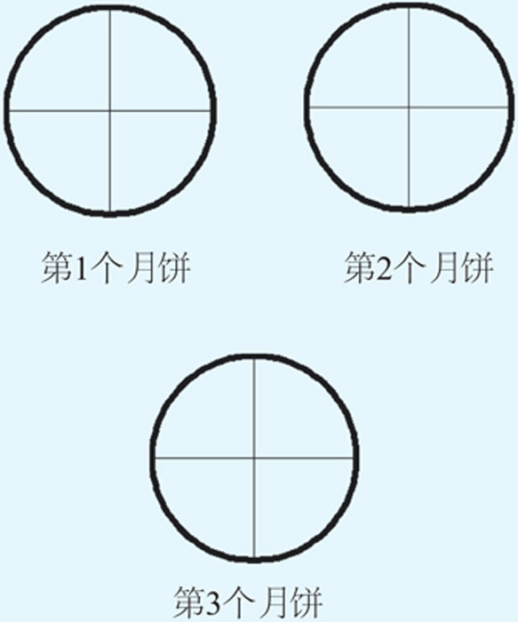
第7讲 图形拼剪
1.第1组图形中，图形3和图形5能组成长方形；第2组图形中，图形2和图形5能组成长方形。
2.图形A和图形B重叠后会是图形3。
3.图形A是图形2和图形4重叠形成的，图形B是图形1和图形6重叠形成的。
4.
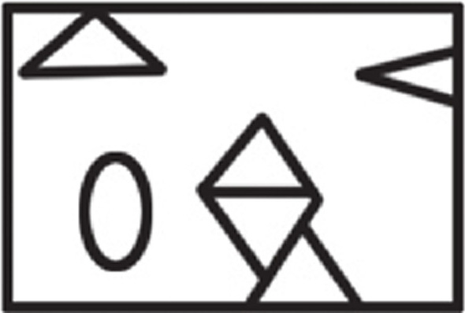
5.图1是妈妈从布料上剪下来的。
6.多余的图是图3。
7.多余的图是图3。
8.沿虚线剪开即可。
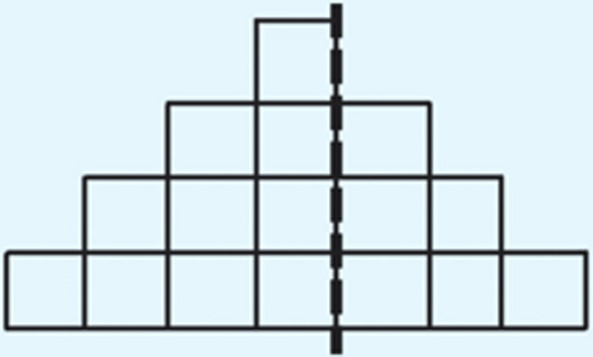
第8讲 图形展开1
1.展开效果是图2。
2.展开效果是图4。
3.展开效果是图4。
4.展开效果是图1。
5.展开效果是图2。
6.展开效果是图2。
7.展开效果是图5。
8.将正方形按照下图对折2次，然后用剪刀沿虚线剪开。
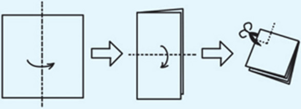
9.展开效果是图3。
第9讲 图形展开2
1.“小”字在后面。
2.蜻蜓在右面。
3.
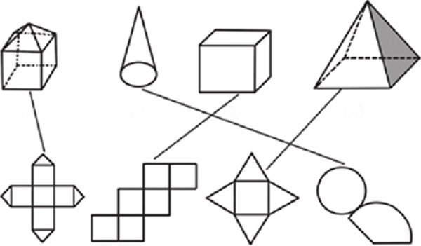
4.图形2是由图例的展开图折叠成的。
5.图形4是图例的正方体纸盒的展开图。
6.图3是正确的展开图。
7.折完后是立方体4。
8.折完后是立方体2。
9.折完后是立方体4。
第10讲 图形推理
1.方框里的珠子是后续的6颗珠子。
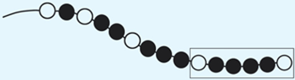
2.被大树挡住的彩旗分别是黄、蓝、红、绿、绿。
3.
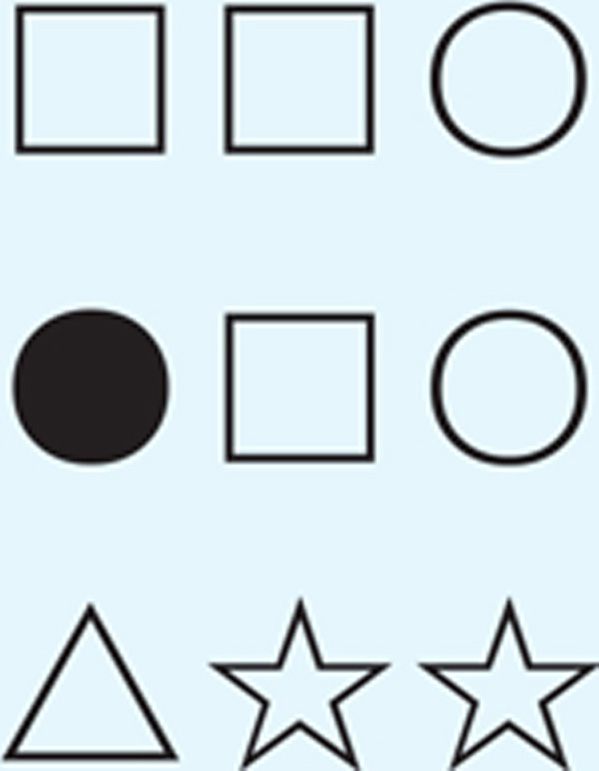
4.
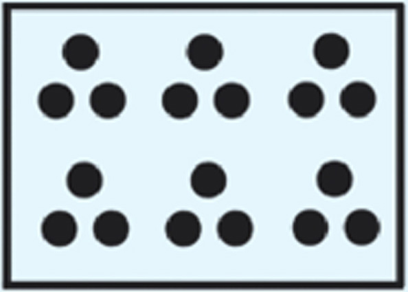
5.
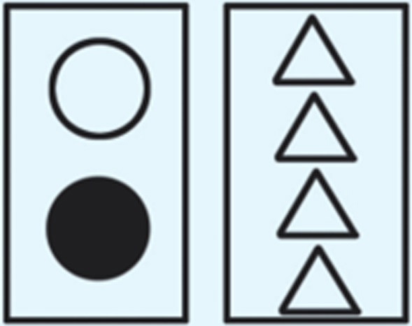
6.
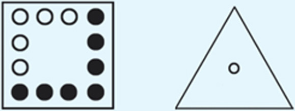
7.
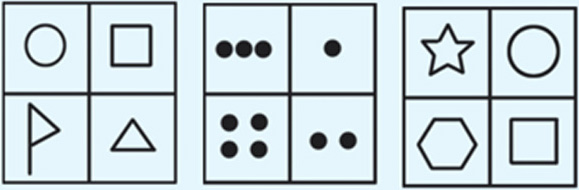
8.
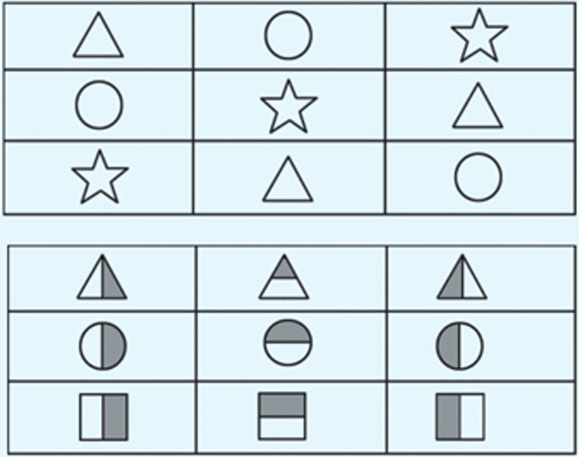
第11讲 图形代数
1.（1）★=4，（2）★=5，（3）★=10
（4）★=6，（5）★=20，（6）★=4
2.（1）●=2，（2）▲=4，（3）■=3
3.（1）○=3 △=5
（2）☆=1 □=8
（3）★=6 ●=8
（4）■=14 ▲=4
4.（1）○=3 ☆=3
（2）△=4 □=2
（3）★=12 ▲=4
（4）■=2 ●=3
5.（1）○=7 ☆=3 □=2
（2）△=4 □=10 ☆=4
第12讲 量的比较1
1.上面那支钢笔更长。
2.下面那支铅笔更长。
3.（3）号桶里原来的奶油最多。
4.最下面的猫能够最先吃到鱼。
5.最右边的铅笔最长。
6.中间的蜗牛最先到家。
7.最上面的小狗最先吃到骨头。
8.长方形所占的地方最大。
9.汽车不能从桥底下过去。
第13讲 量的比较2
1.从左往右数第3根弹簧上挂的物品最重，第1根弹簧上挂的物品最轻。
2.从左往右数第3位叔叔挑的货物最重。
3.从左往右数第3辆货车运的蔬菜最轻。
4.从左往右数第2位渔夫打的鱼最多。
5.从左往右数第3个水壶里剩的水最多。
6.
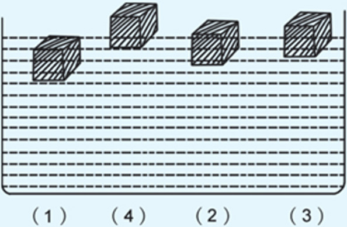
7.②号杯子里的水最甜。
8.①号杯子里放的糖最多。
9.②号杯子里放的玻璃球最大。
10.③号杯子里放的玻璃球最小。
11.第4个人钓的鱼最大。
第14讲 量的推理
1.从重到轻：小牛、小猪、小狗、小猫。
2.7。
3.（1）将天平右侧的苹果移动2个到左侧。（2）将天平右侧1克的砝码移动到天平的左侧。（3）将天平右侧2克的砝码移动到天平的左侧，将天平左侧5克的砝码移动到天平的右侧。
4.4。
5.12。
6.2。
7.4。
第15讲 文字推理
1.米莉拿的是玩具汽车、莫妮卡拿的是拼图、嘟嘟拿的是毛毛熊。
2.熊猫排在第1个，斑马排在第2个，长颈鹿排在第3个，松鼠排在第4个。
3.从快到慢的顺序：天天、嘟嘟、豆豆、贝贝。
4.从重到轻的顺序：小宁、小龙、小明。
5.从快到慢的顺序：3班代表、1班代表、2班代表、4班代表。
6.米莉买了玩具汽车，莫妮卡买了魔方，果果买了拼图，马克买了玩具飞机。
第16讲 认识钟表
1.9：00、5：00、8：30、6：30。
2.2：45、7：15、10：45、8：15。
3.
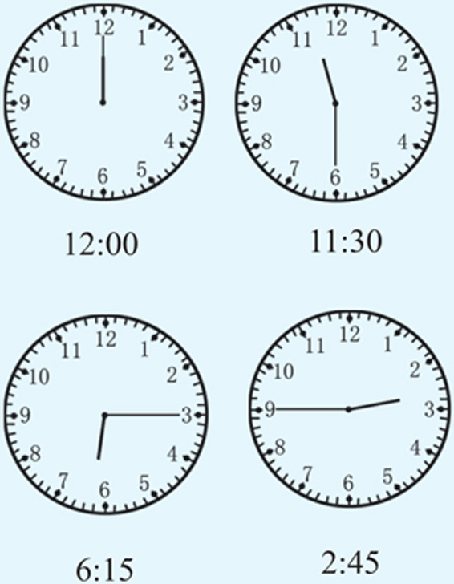
4.6：00、6：45。
第17讲 时间推理
1.第1张照片是最先拍的，第2张照片是最后拍的。
2.第2张照片是最先拍的，第1张照片是最后拍的。
3.正确的排序如下。
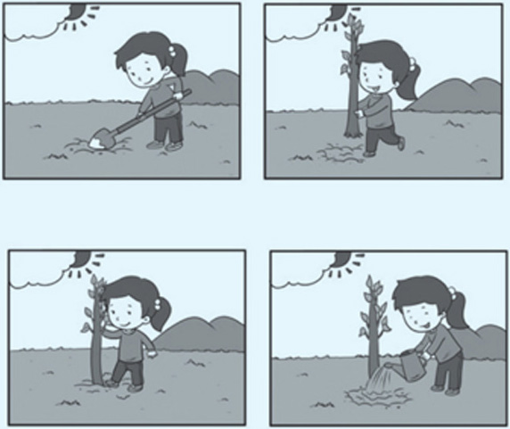
4.小鸡最先来到学校，小狗最后来到学校。
5.正确的排序如下。
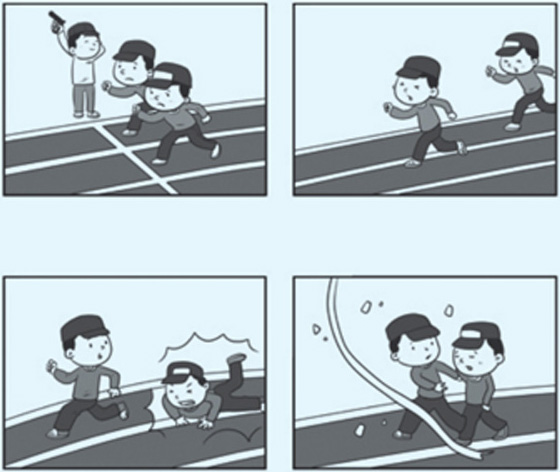
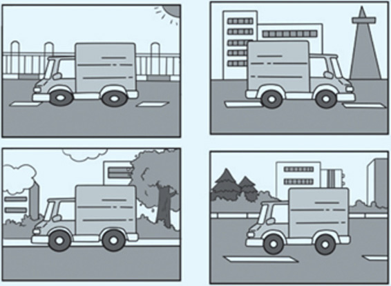
6.正确的排序如下。
第18讲 火柴棒算式游戏
1.略。
2.
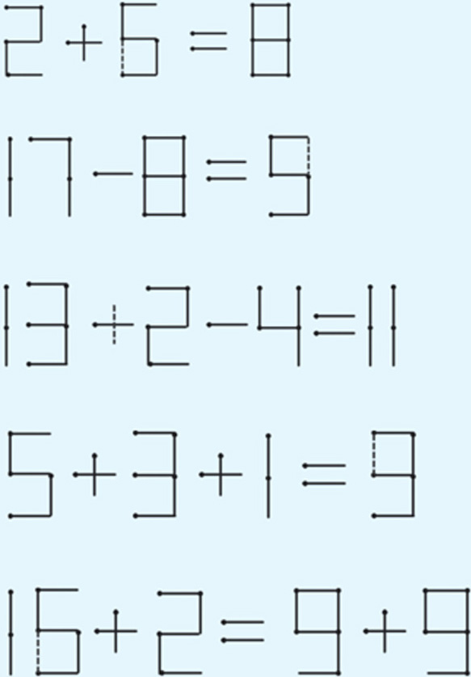
3.
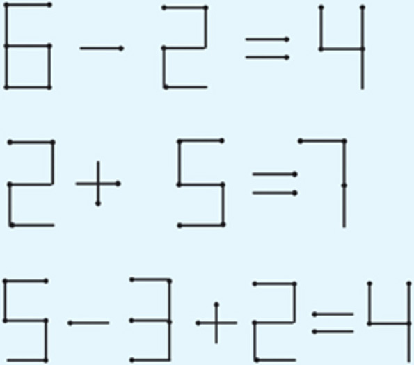
或
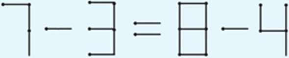
4.
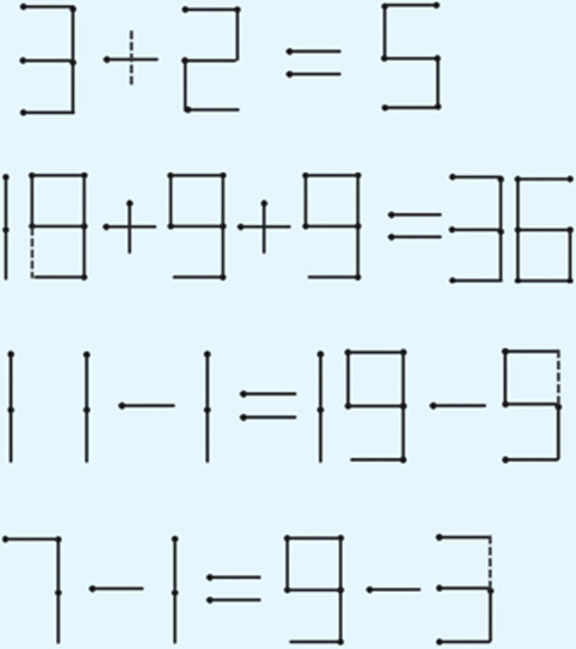
或
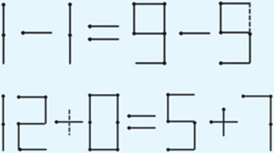
5.
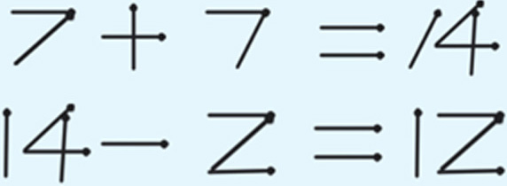
或
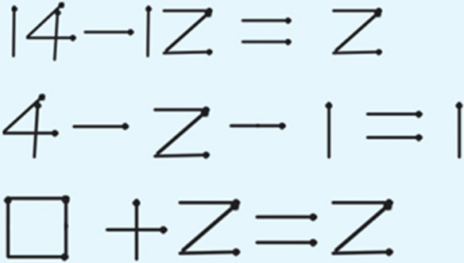
6.
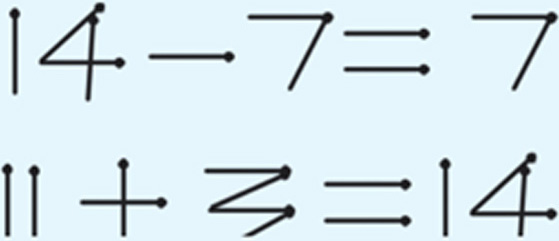
或
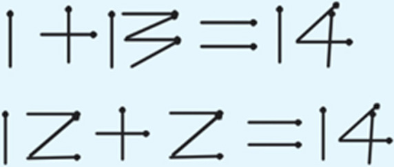
7.
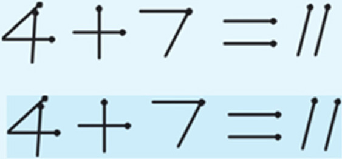
或
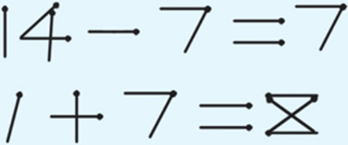
或
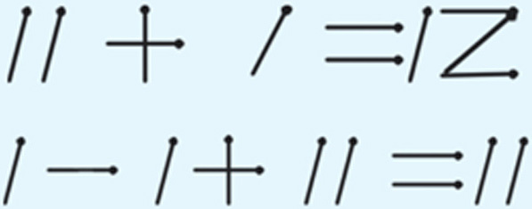
或
第19讲 火柴棒图形游戏
1.
2.
3.
4.2根，如下图所示。
5.
6.
7.
8.
9.
10.
11.
12.
13.
第20讲 排列组合
1.6种。
2.6种，2种。
3.6种。
4.8种。
5.8种。
6.4次，10次。
7.6场，10场。
8.6种。
9.6种。
第21讲 排队问题
1.（1）5；（2）4；（3）10。
2.略。
3.（1）10；（2）4；（3）10；
4.14排座位。
5.10个人排队。
6.嘟嘟不出列。
7.12个。
第22讲 购物付钱
1.有10种换法。
2.有11种换法。
3.小皮球成盒买时比较便宜，所以老师应该先成盒地买，16元可以买2盒小皮球，还剩16-6-6=4元，还可以买2个小皮球，所以老师最多可以买4+4+2=10个小皮球。
4.（1）莫妮卡买了3元/块的橡皮和15元/支的笔。（2）莫妮卡有2种付款方式。方式一：10元纸币1张，5元纸币1张，1元纸币3张。方式二：5元纸币3张，1元纸币3张。（3）莫妮卡有3种付款方式。方式一：20元纸币1张。方式二：10元纸币2张。方式三：10元纸币1张，5元纸币2张。
5.马克买了单价为5元、6元和9元的玩具汽车。
6.第1种洗发水：21元。第2种洗发水：24元。第3种洗发水：21元。第4种洗发水：24元。买第1种和第3种洗发水最划算。
第23讲 认识月历
1.（1）这是2月的月历，这个月一共有28天；（2）这个月有4天是星期日，有4天是星期六；（3）这个月的第4个星期日是24日。
2.（1）10月有5个星期二，第2个星期二是8日；（2）如果今天是10月的第5个星期四，那么明天是11月1日，昨天是10月30日；（3）2019年的国庆节是星期二；（4）如果爸爸10月9日早上出差了，出差了整6天，爸爸应该15日回来。
3.
4.2019年11月18日是星期二，那么2019年11月12日是星期三。
5.2019年4月3日是星期四，那么2019年4月30日是星期三。
第24讲 数方块
1.4块、10块、7块、8块。
2.10块、9块、9块、10块。
3.11块、15块、14块、9块。
4.7块、20块、9块、8块。
5.13块、20块、19块、17块、11块、13块、8块、11块、8块、20块。
第25讲 填数字
1.
2.
3.
4.
5.
6.
第26讲 分类整理
1.按照文具和体育用品将物品分成2类。
2.如果按照数量分类，可以按照数量为1和数量为2将物品分成2类；如果按照用途分类，可以按照蔬菜、水果、文具将物品分成3类。
3.2种方法。如果按照数量来分，可以按照数量为3和数量为4将图形分成2类；如果按照是否填充颜色来分，可以按照有填充颜色和未填充颜色将图形分成2类。
4.如果按照牌面数字来分，可以按照牌面数字为2、3、4分成3类；如果按照花的类型来分，可以按照黑桃（深色桃心）、红桃（浅色桃心）、梅花分成3类。
5.
（1）
（2）
6.
（1）
（2）
（3）
第27讲 数字排列
1.（1）13，12；（2）10，8；（3）11，9。
2.（1）3，3；（2）11，13；（3）4，1。
3.（1）8，8；（2）11，7；（3）15，16。
第28讲 运算
1.
2.89560913
3.
11-5对18-12；13+14对2+15+10；21-9对6+6；3+6+8对11-5+11；15-4+2对9+6-2。
4.
第29讲 整体和部分
1.7块砖。
2.12个六角星，10个圆形。
3.10个轮子。
4.16棵苹果树。
5.30块瓷砖，其中带条纹的瓷砖12块，不带条纹的瓷砖18块。
6.从左往右数第2个盒子。
第30讲 一笔画问题
1.
2.入口和出口分别开在蛇馆和猴山，游客从入口出发不走重复路线就可以把动物园都参观完从出口出去。